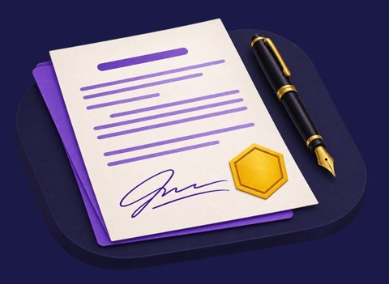
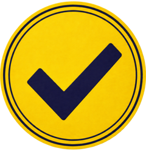
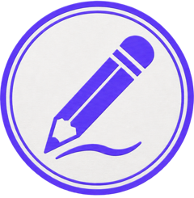

¡Hola! Qué gusto tenerte aquí
Soy Doris y voy a acompañarte estas tres semanas.
Quizá es tu primera vez con gamificación, o quizá ya probaste algunas ideas. Vengas de donde vengas, lo que traes suma: por eso vamos a aprender entre todos.
Aquí puedes preguntar, probar y equivocarte sin que pase nada. No necesitas llegar con las respuestas, las vamos a construir haciendo. Y si algo no se entiende, me escribes.
¿List@? Te presento a Valeria.
Conocer a Valeria →Conoce a Valeria
“Hola. Soy Valeria Campos, gerente de Talento en Distribuidora Kunturi. Somos mil doscientas personas y más de la mitad trabaja en tiendas y almacenes.
Cada año todos deben completar Integridad Kunturi, nuestro curso de ética y cumplimiento. Este año solo el 41 % lo terminó a tiempo. El resto lo hizo a las apuradas la última semana, con el jefe encima. Y ahora auditoría me pide evidencia de que la gente entiende, no solo de que hizo clic.
Yo ya sé lo que quiero: puntos, un ranking por área y un premio. El presupuesto es bajo y en tienda solo hay celular. ¿Me ayudan?”
Para ir pensando: ¿qué le preguntarías antes de aceptar?
Esto no se califica ni hay respuesta correcta. Es solo para que llegues el sábado con una idea tuya.
Guárdate tu respuesta. El sábado escucharás las de tus compañeros y ahí empieza el trabajo.
Cómo vamos a ayudar a Valeria
Trabajas en dos planos a la vez, y el criterio que usas es el mismo en los dos.
El estudio
Fundas un estudio de diseño con tus compañeros y juntos atienden el encargo de Valeria. Le presentan propuestas, ella responde y ustedes ajustan. No se califica.
Tu proyecto
Aplicas lo aprendido a un curso o programa tuyo, o al caso alternativo del aula. Lo entregas y lo sustentas. Es lo único que se califica.
Tu estudio
Serán dos estudios: uno de dos personas y otro de tres. Con quién trabajas se define el sábado 7.
Tu ruta
Un ritmo sencillo que se repite cada semana.
En las sesiones
Resolvemos retos en equipo, comparten los avances de sus proyectos y trabajamos en ellos para resolver dudas.
Entre sesiones
Completas la lectura, la autoevaluación y el avance de tu proyecto que indica el aula.
Con acompañamiento
Recibes retroalimentación y revisión para mejorar tu propuesta. En la semana 2 también pruebas el prototipo de otro participante.
Evaluación final individual
El sábado 21 sustentas tu proyecto en 15 minutos, con preguntas incluidas. Hasta el martes 24 entregas la versión ajustada. El viernes 27 recibes tu resultado.
- Conéctate cinco minutos antes.
- Ten a la mano el caso de tu proyecto.
- Prende la cámara si puedes: se trabaja en equipo.
- Anota las decisiones que tomas, no solo los conceptos.
Primero tu criterio; después, la IA
Si usas IA, hazlo después de tu propio intento. En la entrega, indica para qué la usaste y qué ajustaste de su propuesta.
Hora de Lima. Cada sesión empieza con 15 minutos de tolerancia y tiene una pausa de 15. Enlace de los talleres: pendiente. Un prototipo es la primera versión de tu propuesta, lo bastante armada para que otra persona la recorra.
Mientras tú avanzas, tu estudio también sube de nivel.Haz avanzar a tu estudio
Cada propuesta que le presentan a Valeria los acerca a ser su socio. Sin puntos individuales, sin ranking entre equipos y sin penalizaciones.

Y al llegar a Socio: el contrato
Valeria firma con tu estudio al inicio del taller 3. En todos los niveles recibes el mismo acompañamiento y una consulta breve conmigo en cada reto.
Qué responde Valeria cuando le presentan
En cada taller tu estudio resuelve dos retos sobre su caso y se los presenta, como se le presenta a un cliente real. Son cuatro en total. Ella responde como respondería cualquier clienta: con una reacción, una razón y un siguiente paso.


Sello dorado
Reconoce una decisión muy bien defendida o una mejora grande después de la retroalimentación. No cambia tu nota: queda en la ruta del estudio, a la vista de todos.
Tu evaluación final
Es individual y califica tu proyecto integrador.
Se califica una sola cosa: tu proyecto integrador. Lo sustentas el sábado 21 y entregas la versión ajustada hasta el martes 24.
Las entregas parciales, las autoevaluaciones y los retos en equipo no llevan nota. Están ahí para que llegues preparado y mejores con retroalimentación a tiempo.
Todo lo que necesitas para llegar ahí está en el aula.Tu aula
| Cuándo | Qué encuentras |
|---|---|
| Desde el primer día | Video de Valeria, esta guía, el sílabo, el caso de Kunturi, el caso alternativo y el enlace de los talleres. |
| Cada semana | Lectura, plantillas y autoevaluación del módulo en curso. |
| Después de cada taller | Grabación, resumen y la ruta del estudio actualizada: dónde va cada equipo y qué propuestas lleva aprobadas. |
En el foro de presentación se conocen entre ustedes. En el foro de dudas puedes aclarar lo que necesites: te responderemos tus compañeros o yo. Cada entrega se sube en su módulo del aula, donde encontrarás el formato y la hora límite.
Necesitas computadora con cámara y micrófono, conexión estable y una herramienta para prototipar: PowerPoint, Canva, Genially o la que prefieras.
Solo queda una cosa antes del sábado.Tu primera misión
Antes del sábado 7. Puedes marcar aquí mismo lo que vayas haciendo.
No vas a salir sabiendo solo más de gamificación. Vas a mirar cualquier curso, taller o inducción y ver lo que antes no veías: qué decisión lo sostiene, qué le falta y cómo lo harías tú.
Y vas a poder sustentar tus propuestas con criterio, frente a tu equipo, tu jefatura o tu cliente.